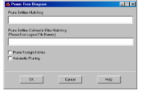
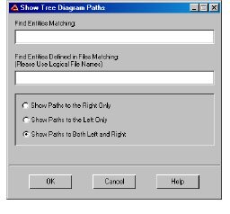

Tree Diagram Menu Options
To access tree diagram specific options, select Call Tree and one of the following menu options:
• Display Arguments
• Hide Arguments
• Prune Paths hides functions whose name matches a specified string or hides defined-in files.
The Prune Tree Diagram dialog box appears.

a In the Prune Functions Matching and/or Prune Functions Defined in the Files Matching fields, specify the desired string.
Note: Both fields are case-sensitive and accept wildcard characters such as * to prune multiple occurrences of the specified strings.
b Click OK.
DIScover hides all functions below the selected function, marking them with triangular tabs at the lower corners of the functions immediately above or below them.
• Show Paths
The Show Tree Diagram Paths dialog box appears.

a In the Find Entities Matching and/or Find Entities Defined in Files Matching fields, specify the desired string.
Note: Both fields are case-sensitive and accept wildcard characters such as * to find multiple occurrences of the specified strings.
b Select a path display option:
• Show Paths to the Right Only
• Show Paths to the Left Only
• Show Paths to Both Left and Right
c Click OK.